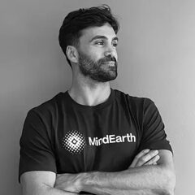
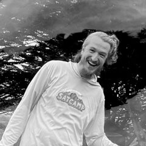
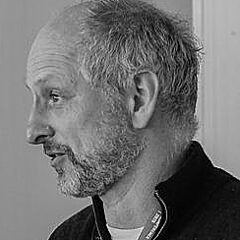

Ian SchulerDevelopment Seed
Katie BaynesNASA
Drew BreunigCmpnd
Amy SteikerUniversity of Colorado, CIRES
David BiancoBlue Stripe Geospatial
Alex LeithExecutive Director, Auspatious
Ankur ShahRadiant Earth
Adeel HassanElement 84
Alex KovacWorld Resources Institute
Alfonso Ladino-RinconUniversity of Illinois at Urbana-Champaign
Amit KapadiaQuadrature Earth
Anthony LukachDevelopment Seed
Brad AndrickEarth Genome
Calvin MetcalfSanborn Map Company
Cesar AybarAsterisk Labs
Chris HolmesPlanet
Chris StonerAmazon Web Services
Clinton LunnUtah Geological Survey
Colton LoftusCenter for Geospatial Solutions, Lincoln Institute of Land Policy
Dana BauerOverture Maps Foundation
Daniel DufourChattanooga Area Regional Transportation Authority
David WrightEsri
Denys GodwinClark Center for Geospatial Analytics
Dewey DunningtonWherobots
Dmitri BaghSafe Software
Emmanuel MathotDevelopment Seed
Erik LoyerSpherical
Fernando PerezUC Berkeley

Francesco AsaroMindEarthFrancesco NattinoNetherlands eScience Center
Gaurav BhardwajWorld Bank Group
Giovanni RomeroAquaveo
Guillaume Eynard BontempsCNES
Guillaume SueurGeomermaids
Hans MohrmannBrightband
Harry SamuelsUniversal Service Administrative Company
Hunter PitelkaAllen AI
Isaac CorleyTaylor Geospatial
Ivor BosloperTaylor Geospatial
jake WilkinsEpoch
James DouglassNatural Capital Alliance at Stanford University
Jarrett KeiferElement 84
jason GilmanElement 84
Jed SundwallRadiant Earth
Jeff AlbrechtLGND AI
Jennings AndersonOverture
Jessie PechmannHumanitarian OpenStreetMap Team
Jie ZhangEsri
Joe BurkinshawSparkgeo
Joe HammanEarthmover
Julia WagemannthriveGEO GmbH
Justin LewisTerraFrame
Kanahiro IguchiMIERUNE Inc.
Karis TennesonSpatial Informatics Group
Kyle BarronDevelopment Seed
Mahsa JamiKBR, Inc., Contractor to the USGS Earth Resources Observation and Science Center
Marshall RobinsonUtah Geological Survey

Matt FisherSchmidt DSE @ UC BerkeleyMatt ForestWherobots

Matt PriceUniversity of TorontoMatthew HaffnerUniversity of Wisconsin - Eau Claire
Matthew HansonLGND AI
Maxym MalynowskyUnited Nations Office for the Coordination of Humanitarian Affairs (OCHA)
Melissa RosaHumanitarian OpenStreetMap Team
Michelle RobyRadiant Earth
Mikolaj CzerkawskiAsterisk Labs
Nissim LebovitsRadiant Earth
Noah SlocumEsri
Pete GadomskiDevelopment Seed
Philip CaseyNorth Carolina Institute for Climate Studies
Pranav ToggiWherobots
Raphael HagenCarbonPlan
Rishi MadhokTerraByte AI
Robert BanickArbol / dClimate
Sarah ZwiepFloodbase
Sean HarkinsDevelopment Seed
Seth FitzsimmonsOverture Maps Foundation
Shane LoefflerCarbonPlan
Shane PutnamDewberry
Siddharth ChaudharyNASA ODSI
Tom NicholasEarthmover
Tonian RobinsonEarth Space Technology Services
Tyler EricksonVorGeo
Ujaval GandhiSpatial Thoughts LLP
Vincent BuscarelloFeanix Biotechnologies
Vincent SaragoDevelopment Seed
Will CadellSparkgeo
Zac DezielDevelopment Seed